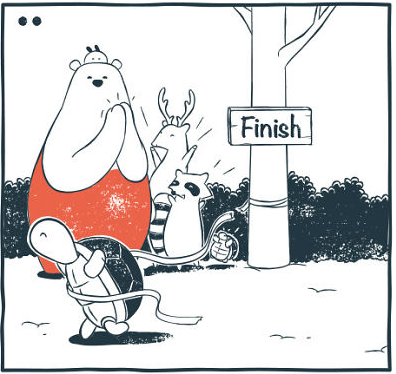

Pandáék versenyt rendeztek teknőssel és nyúllal.

Teknős ért be elsőként a célba. Mindenki újjong.
Már eltelt egy kis idő, de nyúl még mindig nem érkezett meg. Panda gondolkozni kezd, mi történhetett.
MI EZ? Teknős banda elfogta nyulat! Csalás történt!